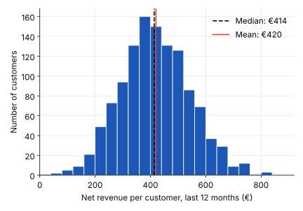
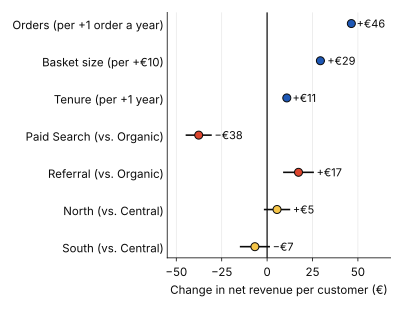
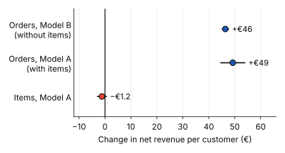
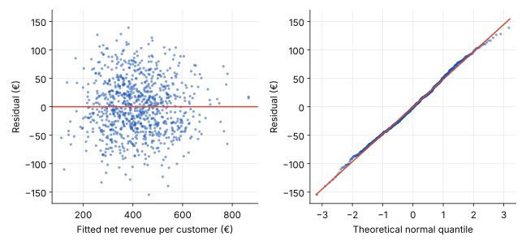

Regression analysis
Multiple Linear Regression
An online retailer looks at two customers. Both placed 6 orders last year, yet one generated €280 in net revenue and the other €520. Simple Linear Regression can model how revenue relates to order frequency, but because both customers placed the same number of orders, it cannot explain their revenue difference using that predictor alone.
Average basket size, customer tenure, and acquisition channel may help explain the gap.
Multiple linear regression estimates the relationship between an outcome and several predictors at the same time. This post builds one for net revenue per customer. The numbers come from simulated data for an online retailer, so the patterns are realistic but not from a real company.
From One Predictor to Several
The multiple regression equation
In simple regression, revenue is explained by one variable. In multiple regression, every additional driver gets its own term:
- b0 — Intercept: The model’s predicted revenue when all numeric predictors are zero and categorical predictors are at their reference values.
- b1, b2, b3 … — Coefficients: Each coefficient estimates how much predicted net revenue changes when its predictor increases by one unit, while the other predictors remain constant.
“All other predictors stay the same” is the key idea. It lets us compare two customers who differ in only one thing. If they have the same basket size and tenure, b1 tells us what one extra order is worth. The coefficients are still found with Least Squares: the model picks the values that make the squared gaps between actual and predicted revenue as small as possible.
The Data: Net Revenue per Customer and Its Possible Drivers
The outcome is net revenue per customer over the last 12 months, after returns and discounts. The five possible drivers:
- Orders per year (numeric): about 6 on average, from 1 to 14.
- Average basket size (numeric): about €62 per order.
- Customer tenure (numeric): years since the first order, about 3 on average.
- Region (categorical): North, Central, South.
- Acquisition channel (categorical): Organic, Paid Search, Referral.
The data contain 1,200 customers. The model is fitted on 900 of them, and the other 300 are held back for the test at the end of this post.

Multiple regression can mix numeric and categorical predictors, but categories must be turned into numbers first.
Turning Categories into Numbers: Dummy Variables
Region and channel are words, not numbers. Each category becomes a 0/1 column called a dummy variable:
| Channel | Paid Search | Referral |
|---|---|---|
| Organic | 0 | 0 |
| Paid Search | 1 | 0 |
| Referral | 0 | 1 |
Organic has no column of its own. It becomes the reference category, the group every other category is compared with. The full encoding is covered in One-Hot Encoding.
This matters for reading results: the Paid Search coefficient is not a revenue level. It is the estimated difference between Paid Search and Organic customers, with the other predictors held constant. Region works the same way, with Central as the reference.
Reading the Coefficients: What Each Number Means in Euros per Customer
import statsmodels.formula.api as smf
model = smf.ols(
"net_revenue ~ orders + basket_size + tenure + C(channel) + C(region)",
data=train
).fit()
print(model.summary())The summary table lists one coefficient per predictor, with its confidence interval. Two of them, read in business language:
- Orders: +€46 per additional order per year, with basket size, tenure, channel and region held constant (95% interval: €45 to €48).
- Paid Search: −€38 compared with Organic customers who are otherwise alike (95% interval: −€45 to −€30).

When Predictors Overlap: Multicollinearity
Suppose the retailer adds items bought per year. Customers who order more often also buy more items, so the two move almost together (correlation 0.96 here).
- Model A includes both orders and items.
- Model B keeps only orders.
The coefficient for orders hardly moves (€49 in Model A, €46 in Model B), but its standard error is more than three times larger in Model A (€2.5 vs. €0.7). The items coefficient is about zero (−€1.2), with an interval that covers both positive and negative values. The model cannot decide how to split the credit between two predictors carrying almost the same information.
A common check is the Variance Inflation Factor (VIF). Values near 1 mean little overlap; a common rule of thumb treats values above 5 to 10 as a warning. Orders and items both have a VIF of about 12.
The lesson is not “multicollinearity is bad”. Predictions usually stay fine, but when predictors overlap, the individual coefficients become unreliable. Keep the one that is easier to act on, or combine them.

Does the Model Hold Up? Adjusted R², Residuals, and New Data
Three questions decide whether the model can be trusted:
- How much variation does the model explain? R² is 0.85 and adjusted R² is 0.85, so about 85% of the differences in revenue between customers are explained. Adjusted R² penalizes predictors that add little, which makes it fairer when comparing models. See Evaluating and Interpreting a Regression Model.
- Do the errors behave? The residuals show no curve and no fanning, and the Q-Q points follow the line. The checks from The Four Assumptions of Simple Linear Regression carry over.
- Does it work on customers it has not seen? On the 300 held-out customers the typical error (RMSE) is €46, against €48 on the 900 training customers. That similarity is a sign the model is not overfitted; see Overfitting and Underfitting.

How to explain it to stakeholders
“Each additional order per year goes with about €46 more net revenue per customer, when basket size, tenure, channel and region are the same. Customers acquired through Paid Search bring about €38 less per year than organic customers who otherwise look alike, and referral customers about €17 more.”
“Together these factors explain about 85% of the differences between customers, and the model works just as well on 300 customers it had not seen. It shows association, not proof that switching channels would change revenue.”
“So the question for the next budget meeting is: which channel brings customers who order more often and stay longer, and is Paid Search still worth its cost?”
Key takeaway
Multiple linear regression estimates the relationship between an outcome and several predictors at once, and each coefficient is read with the other predictors held constant. Categories enter as dummy variables measured against a reference category, overlapping predictors blur individual coefficients, and the model should be judged on adjusted R², residuals and new data, not on R² alone.
Related posts
- Simple Linear Regression The fitted line and what its slope and intercept mean.
- Least Squares How the best-fitting line is chosen by minimizing squared errors.
- One-Hot Encoding How categories become 0/1 columns a model can use.
- Evaluating and Interpreting a Regression Model How R², MAE and MSE measure fit, and how confidence intervals describe uncertainty.
- The Four Assumptions of Simple Linear Regression When a fitted line can be trusted.
- Overfitting and Underfitting Why a model can fail on new data, and how to spot it.
- Generalized Linear Models Regression for outcomes that are not continuous numbers.